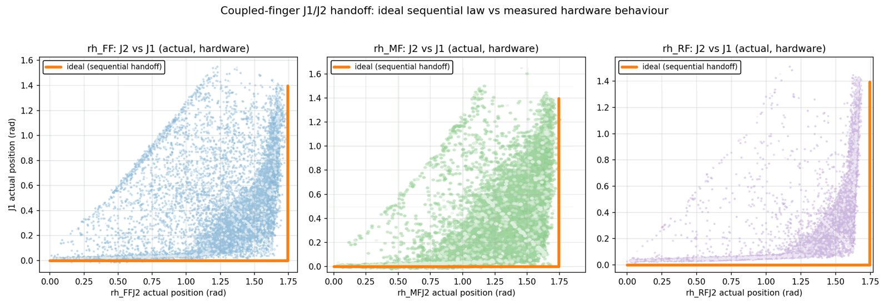
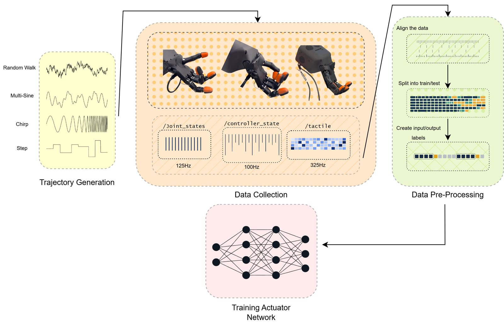
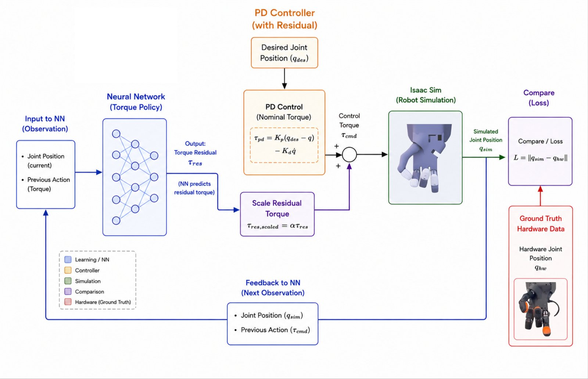

Tendon Slack & Actuator Networks
Trying to learn the Shadow Hand Lite's coupled finger joints from hardware data
TL;DR On the Shadow Hand Lite, one motor drives two finger joints through a tendon, and the real tendon goes slack in a way no PD controller can copy. I built a hardware data pipeline (114 episodes) and tried three ways to learn a residual actuator model for it. None worked, and the reasons turned out to be the interesting part.
The problem: coupled joints
The Shadow Hand Lite has 16 finger joints but only 13 motors. On the first, middle and ring fingers, the two joints nearest the tip (J1 and J2) share a single motor and are linked by a tendon. In simulation that coupling is modelled as a clean handoff: J2 bends all the way to 100°, and then J1 takes over.
I started with ordinary system identification. For each of the 13 motors I fit stiffness, damping and friction so the simulated joint follows the real one under the same command. I used chirp, step, ramp and random excitation, with a Latin Hypercube search run offline. It helped the directly driven joints: mean tracking error went from 0.188 to 0.155 rad, about 17% better. On the coupled fingers it did nothing, and the identified and default gains produced practically the same trajectory.
Finding the tendon slack

So I measured the coupling directly with slow back-and-forth sweeps, one finger at a time, three cycles each. On every finger, J1 started moving before the nominal 100° handoff. The early motion differed from finger to finger, both joints were often moving at the same time, and it got worse at higher speeds.
That pattern is tendon slack: the tendon is loose, so the motor can move without immediately pulling the next joint, and once it goes taut the dependent joint starts early. I sent a clip to Shadow Robotics and they agreed that slack was the likely cause.
This matters because no set of PD gains can reproduce it. The error is state-dependent and bounded, and it sits on top of the controller. That is exactly the kind of thing a learned residual, or actuator network, is supposed to capture.
All the details, including the full pipeline, the model specifications and the gains I identified, are in my MSc dissertation (chapters 6–7 and the appendices).
The data pipeline

- The rosbag is the single source of truth. Everything after recording is offline and re-runnable, so I could change the dataset design without going back to the robot.
- Excitation: random walks, multi-sines, chirps and steps. Joints that weren't being excited were parked fully curled, because parking them at zero made the fingers collide.
- Alignment: every stream is resampled onto one 60 Hz grid, the policy's control rate. Gaps are flagged and never stitched across.
- Samples are laid out exactly like the RL policy's observation: 4 stacked frames × 52 features (position, velocity, controller error and action for 13 motors). A trained model can drop straight into the simulator.
- 114 episodes, split 70/15/15 by episode so nothing leaks across time, with a QC report for each episode.
- There is no calibrated torque on this hand. The motor readout is an uncalibrated number in [−900, 900], so I couldn't just regress torque.
Attempt 1: learning it with RL (UAN)
First I tried an unsupervised actuator network (UAN)[1]: a small MLP adds 16 residual torques to the simulated PD output, and it is trained with RL on a reward for matching the recorded hardware trajectories. No torque labels needed.
It diverged. The mean return fell from 3.1 to −1727 within 4.8M steps and never recovered over 80M more, while the residual torques kept growing. The trajectory-matching reward just wasn't a strong enough learning signal. I only ran four hyperparameter trials, so a different reward weighting might still work.
Attempt 2: a physics-based position loss (GenAN)
Since the next joint position is in the data, I moved the loss into position space, following Generalized Actuator Networks (GenAN)[2]. Isaac Lab[4] gives me the mass matrix, Coriolis and gravity terms, so I pushed the predicted torque through τ = M(q)q̈ + C(q, q̇) + G(q) and a differentiable semi-implicit Euler step[3], then compared the result against the recorded position.
The implementation was right: given the true torque, it reproduced the next position to within 10−4 rad. But the coupled finger links are tiny and very light, so M−1 on those joints is 15,000–44,000. A torque error of about 0.01 N·m becomes several degrees of position error in a single step. Moving the loss into position space didn't remove the sensitivity, it just moved it, and it is worst on exactly the joints I was trying to fix.
Attempt 3: the raw motor signal

So I went back to torque space, this time using the uncalibrated motor signal as the target, with a learned scale α to absorb the unknown units: τ = τPD + α·fθ(x). One motor drives two joints, so I split its signal between J1 and J2 using how much each one actually moved over the next 10 steps. That handles the slack, where both move at once.
The network learned the signal well (MSE 0.0022, 73.8% sign agreement on the coupled first-finger pair). The problem is identifiability: the residual and its scale only ever appear as a product, α·fθ, so the data pins down the product and not the two factors. Pick a different scale and a different residual compensates exactly. Once I scaled it into real torque units and ran it in simulation, the middle finger drifted well outside its recorded range, and because each wrong state feeds the next prediction, the error compounded. Separating the two would need either a calibrated torque signal (which this hand doesn't have) or a usable position loss (see attempt 2).
What happened in the end
None of the three made it into the final system. What rescued the project was an experiment I almost didn't run. I replayed a simulated Baoding trajectory open-loop on the real hand, and it worked. The learned strategy pushes the balls rather than curling the fingers deeply, so J2 never goes past about 100° and the slack region is never entered. For Baoding the problem could be avoided rather than modelled.
I still think it's a useful negative result. On a tendon-driven hand with no torque sensing, torque supervision doesn't exist, position supervision is badly conditioned on the light coupled links, and a learned scale can't be separated from the residual. Anything that needs deep finger flexion will run into this. The next things I'd try are a calibrated torque signal, or a formulation that doesn't divide by those tiny link inertias.
References
- N. Fey, G. B. Margolis, M. Peticco, P. Agrawal. Bridging the Sim-to-Real Gap for Athletic Loco-Manipulation. arXiv:2502.10894, 2025. (UAN)
- J. Schneider, M. Mahajan, L. Chen, S. Guist, B. Schölkopf, I. Posner, D. Büchler. Sim-to-Real Transfer for Muscle-Actuated Robots via Generalized Actuator Networks. arXiv:2604.09487, 2026. (GenAN)
- K. M. Jatavallabhula et al. gradSim: Differentiable Simulation for System Identification and Visuomotor Control. arXiv:2104.02646, 2021.
- M. Mittal et al. Isaac Lab: A GPU-Accelerated Simulation Framework for Multi-Modal Robot Learning. arXiv:2511.04831, 2025.